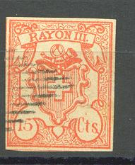
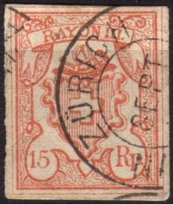
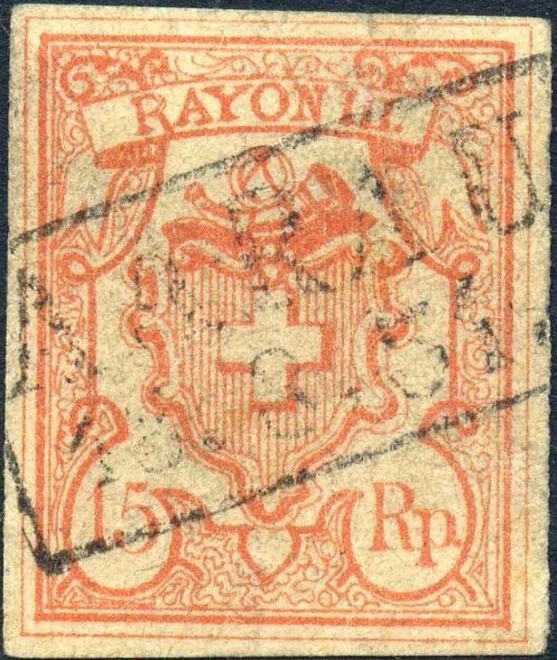
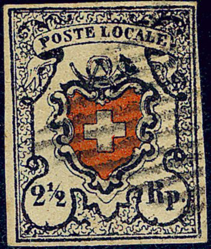
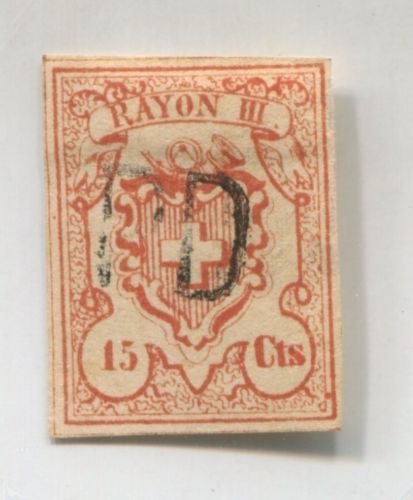

Return To Catalogue - Switzerland overview - Switzerland issues from 1850-1853 - Forgeries of the 1850 issue, part 2 - Forgeries of the 1850 issue, part 3 (Sperati) - Forgeries of the 1850 issue, part 4 (Fournier) - Cancels on first federal issues - Types of the 1850 issue, part 1 - Types of the 1850 issue, part 2 - Issues form 1854-1881
Note: on my website many of the
pictures can not be seen! They are of course present in the
catalogue;
contact me if you want to purchase the catalogue.
Switzerland forgeries of the 1850 issue, part 1, Forgeries of the 1850 issue, part 2, Forgeries of the 1850 issue, part 3 (Sperati)
Two Rayon III forgeries, closely resembling:





These stamps can be found in 'The Fournier Album'; a block of eight stamps with large and small '15' and 'Rp.' and 'Cts.' mixed together. Above the 'YON' the background lines are very specific for this forgery (I haven't seen this pattern on any of the genuine types). The cancel 'PD' in a circle and the 'KIENBERG' can also be found in 'The Fournier Album'.

Block of eight forgeries from a Fournier Album with large and
small '15' and 'Rp.' and 'Cts.' mixed together.


A picture closely resembling the above 2 1/2 rp forgery can be
found in 'The Fournier Album'. Note the peculiar ornament above
the "T" of "POSTE".


Pictures closely resembling the above 10 rp stamps can be found in 'The Fournier Album'. I therefore presume they are Fournier forgeries (it is actually based on type 38 of this stamp). Note the 'KIENBERG' in a box cancel which was used on one of the 10 rp stamps. This cancel can be found in The Fournier Album of Philatelic Forgeries. On http://www.pro-philatelie.de/faelschungen/altschweiz/16I%20venturini.jpg it is stated that this forgery was actually made by the forger Venturini (and only sold by Fournier or 'enchanced' with for example the above 'KIENBERG' cancel). These forgeries exist with and without black cross.

(I suspect the above forgeries to have been made by Fournier as
well, the second one has the words 'FAC-SIMILÉ' printed in blue
on the backside, similar to the forgeries that can be found in
'The Fournier Album of Philatelic Forgeries')

Probably a Fournier forgery with a cancel 'BADEN II 25 OCTO 1850'
in a double circle with posthorn at the bottom, identical to the
one found in The Fournier Album of
Philatelic Forgeries. In
http://www.pro-philatelie.de/faelschungen/altschweiz/14I%20slg-mb-fournier.jpg
a similar forgery can be found with 'POSTE LOCALE' inscription
(imitating type 28); it is there mentioned that it was probably
made by the forger Venturini and
later sold by Fournier.

Venturini-Fournier forgeries as taken from a Fournier Album.


Other forgeries taken from a Fournier Album.


Part of a Fournier Album.





Forgeries of the 15 Rp and 15 Cts made by the same forger. I've
seen this forgery in the Fournier Album of Philatelic Forgeries
as well. It doesn't correspond to any of the genuine types of
this stamp.


Cancelled 'proof's of the 10 r in bluish color with the red part
missing. Possibly also originating from Fournier. The cancel
"CHEZARD 3 DEC 52" can also be found on the above sheet
of forgeries. I don't think the "ST.G." exists as a
genuine cancel (although a similar genuine cancel inside a grille
exists).
{kind=link}
{kind=link}